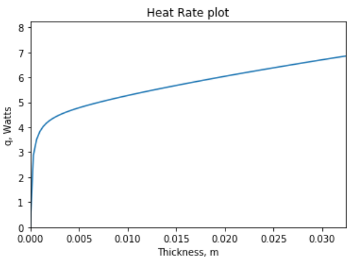

Return to Home Page
Project Details
Analytical solution code, grid independence study, comparison to analytical solution
Navigation Panel
This page is long. If you want to skip to a particular section, click on one of the links below
Analytical Solution
 The analytical solution for flow over an isothermal plat with adiabatic tip
The analytical solution for flow over an isothermal plat with adiabatic tip

import numpy as np
import matplotlib.pyplot as plt
#Calculate Reynolds number from Free stream velocity(U), kinematic viscosity (v), and characteristic length
def Re(U,nu,L):
return U * L / nu
#Calculate Prandtl Number
def Pr(mu,Cp,k):
return mu * Cp / k
#kinematic viscosity from density (rho) and dynamic viscosity (mu)
def nu(rho,mu):
return mu / rho
def mu(rho,nu):
return nu * rho
#Calculate Nusselt Number over isothermal plate: the dimensionless heat transfer coefficient
# Equation 1.52,1.57
def NusseltPlate(h,L,kf,Re,Pr):
if h*L*kf == 0 and Re*Pr == 0:
raise TypeError('Incorrect use of Nu() function: Type FunctionHelp() or th.FunctionHelp() for help on how to use this function')
elif h*L*kf != 0:
output = h * L / kf
else:
if Re < 5000:
if Pr <= 0.6:
raise TypeError('This function uses correlations that expect your Prandlt Number to be greater than 0.6')
else:
output = 0.664*Re**(0.5)*Pr**(1/3)
elif Re < 10**8:
if Pr <= 0.6 or Pr >= 60:
raise TypeError('This function uses correlations that expect 0.6<=Pr<=60')
else:
output = 0.037*Re**(0.8)*Pr**(1/3)
else:
raise TypeError('This function uses correlations that expect your Reynolds Number to be less than 10^8')
return output
#ALL IN SI UNITS
t = 3.28*10**(-5) #initial thickness of plate
U = 1.5 #free stream velocity of air flowing over plate
k_al = 237 #thermal conductivity of aluminum
k_air = 0.0283 #thermal conductivity of air
Prt = 0.703 #Prandtl number
nu = 23.42 * 10**(-6) #kinematic viscosity of air
L = 2.5*10**(-2) #Width of fin
b = 5.4*10**(-2) # Extrusion length of fin
h = k_air/L*NusseltPlate(0,0,k_air,Re(U,nu,L),Prt)
print(h)
Tb = 85
Tamb = 22
theta_b = Tb-Tamb
#initialize some arrays which will store thickness and heat rate
n = 100
tA = np.zeros(n)
qA = np.zeros(n)
for i in range(1,n):
tA[i] = t0*i
#print(tA[i])
V = b*tA[i]*L #Volume of fin
mb = V/(L)*(2*h/k_al/(tA[i])**3)**0.5
a = (h*2*(L+tA[i])*k_al*L*tA[i])**(0.5)*theta_b
qA[i] = a*np.tanh(mb) #heat rate
#print(qA[i])
plt.plot(tA,qA)
plt.title('Heat Rate plot')
plt.ylabel('q, Watts')
plt.xlabel('Thickness, m')
plt.axis([0, max(tA), 0, 1.2*max(qA)])
plt.show()